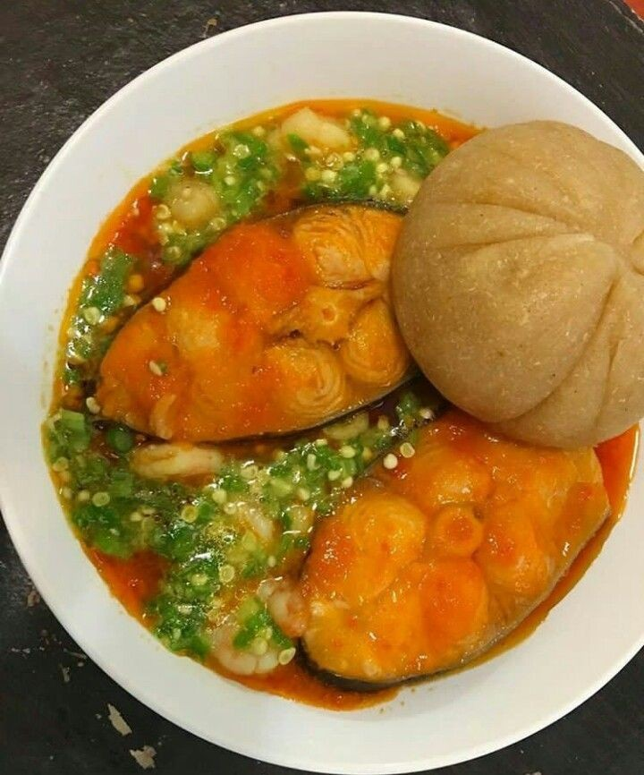
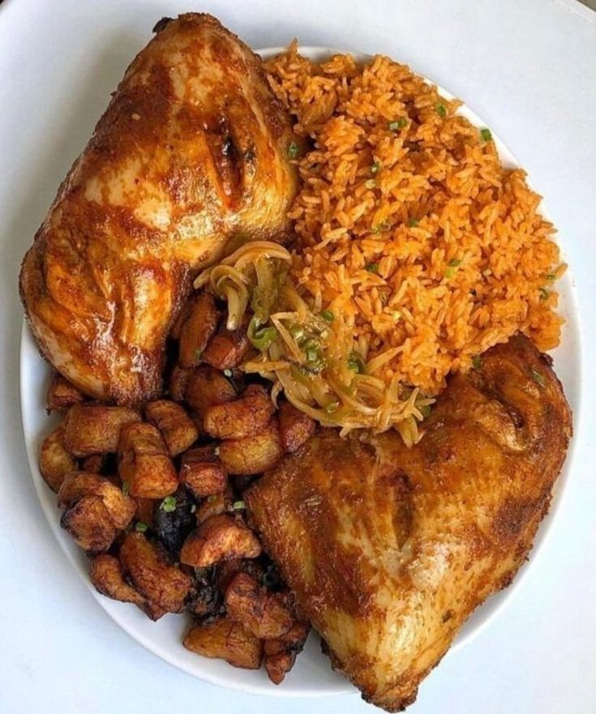
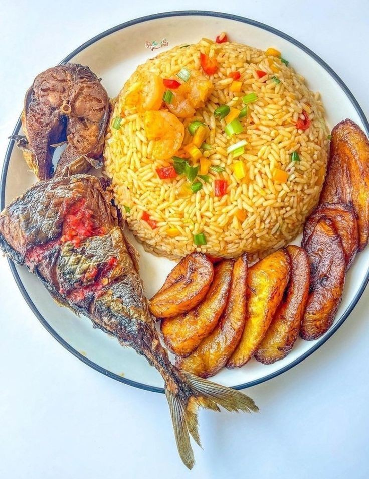

L'Afrique, du Terroir à l'Assiette
Découvrez une cuisine qui célèbre la richesse des saveurs africaines avec une touche de modernité.
Voir le menuBienvenue à La Terrasse
Plus qu'un restaurant, La Terrasse est une invitation au voyage. Notre chef passionné réinvente les plats traditionnels africains pour vous offrir une expérience culinaire unique, dans un cadre chaleureux et convivial.

Nos spécialités incontournables

Yassa Poulet Revisité
Poulet braisé mariné aux oignons et au citron, servi avec son riz parfumé.

Tiep Bou Dien "Signature"
Le plat national sénégalais dans sa version gastronomique.

Poisson Braisé & son Attiéké
Poisson frais du jour, braisé à la perfection et accompagné de semoule de manioc.